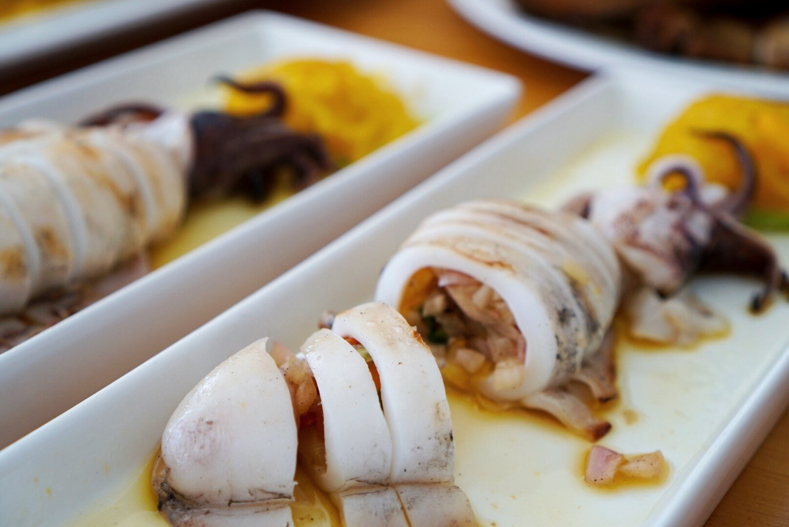
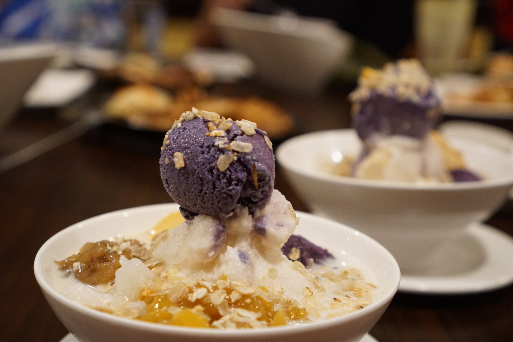
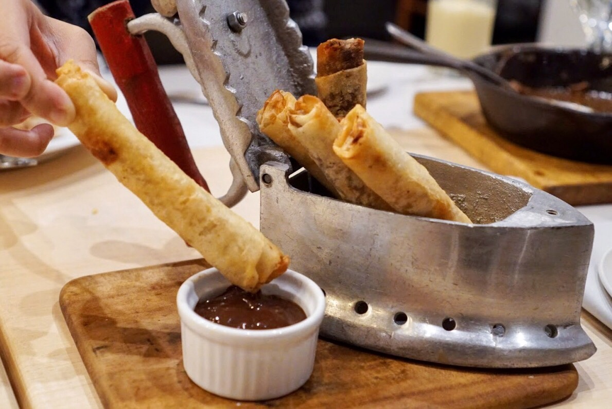
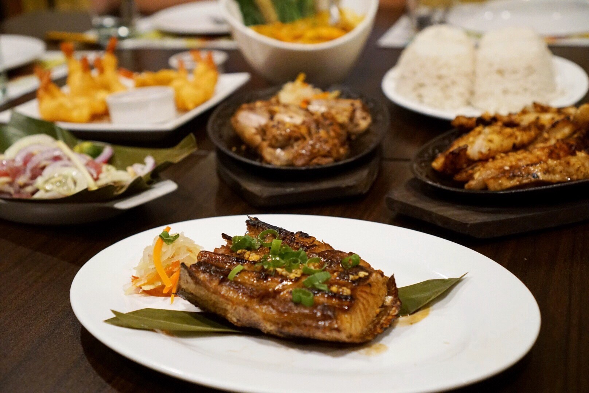
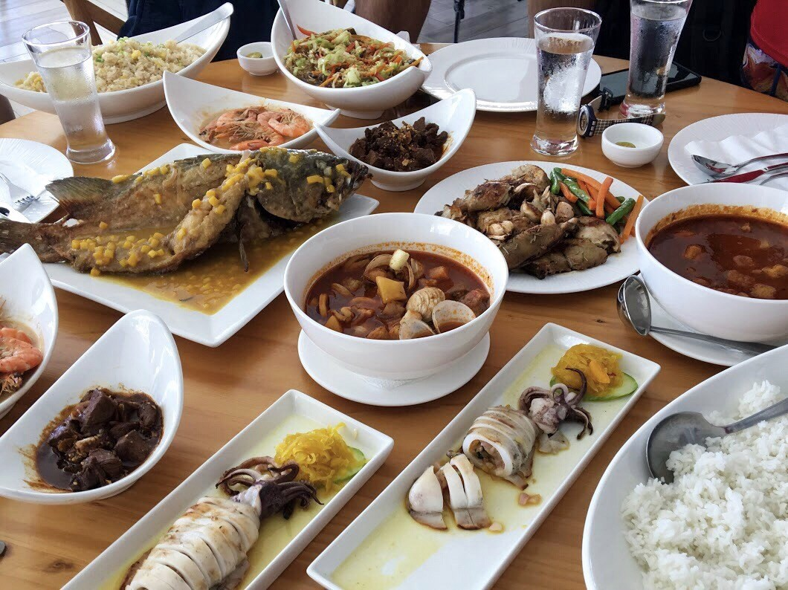
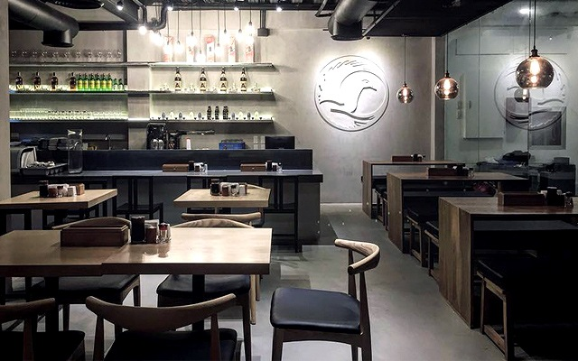
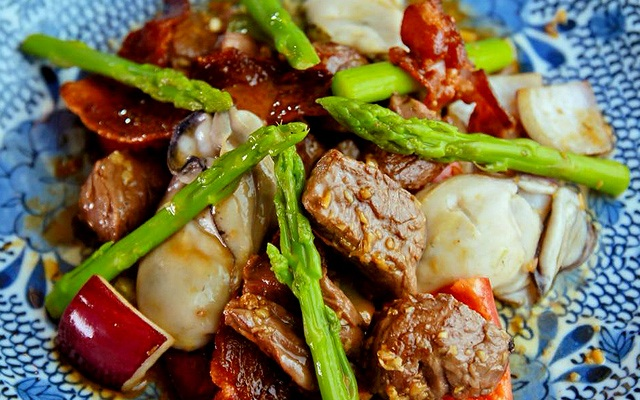

Davao Itinerary:
Ultimate Travel Guide
Durian is known as Davao’s signature fruit!
Davao’s rich fertile soil and typhoon-free areas make it suitable for growing tasty Durian. Durian is available all year round but is usually in season starting August to October. We bought ours in July for P180/kilo, but during peak season it can go as low as P50/kilo!
RECOMMENDED FOODS
Going to a new country is always exciting, from immersing in the culture, people and not forgetting the food! If you’re not overly adventurous with your food choices but still want to have a taste of the iconic cuisine while in Davao, Philippines, check out our list of top 10 dishes to try!
- Boneless Crispy Pata
- Durian and Langka Turon
- Grilled Tuna Belly
- Filipino-style Fried Fish with Mango SauceS
- Grilled Squid
-
One thing we missed about being in Davao are the grilled dishes and this grilled squid was certainly memorable. It looks fairly simple yet there’s an intricate mix of flavours that has a slightly charred and tangy aftertaste. We really like that the grilled squid is also stuffed with chopped tomatoes and onions.

- Halo-Halo
-
If you’re ever in Philippines, you have to try this popular Filipino dessert called Halo-Halo. Hands-down, this is our favourite dessert here. It’s somewhat similar to our ice kachang in Singapore with a base of shaved ice and evaporated milk, and lots of ingredients added to the mixture including sweet beans, coconut and fruits. Not forgetting the standout purple topping – ube (yam) ice cream!

Crispy pata is one of the most popular dishes to order while dining in Davao. This whole, deboned pork leg is simmered in spices and deep fried to perfection. On first bite there’s a deep crackling that echoes and is closely similar to the texture and crisp of a roast pork here in Singapore. This delicious and indulgent dish takes quite an arduous process to prepare yet remains tender and well-seasoned throughout.

This yummy deep fried dessert is a must-try dish when you’re in Davao. We tried this while dining at Rekado Comfort Cuisine, and the spread at this restaurant is indescribably good. The Durian-Langka (jackfruit) Turon is deep fried in lumpia wrapper, and plated in a traditional iron. Also comes with a serving of tablea chocolate dipping sauce.

Serving up fresh seafood and delicious Filipino cuisine, the grilled tuna belly at Yellow Fin is one of the more popular dishes here with simple seasoning but tastes absolutely delicious. It’s chunky yet remains tender throughout and is a pretty addictive dish.

BIf you’re planning a trip to Davao City, recommend taking a boat ride out to this secluded Club Resort Samal on Samal Island. Besides the sandy beaches, blue waters and aesthetically pleasing resort front, the food here is an absolute must-try. We had a seafood feast and everything on the table was delicious. Our favourite is the Filipino-style fried fish with mango sauce – simple but dripping with sweet and savoury flavours.

RESTAURANTS
- Claude’s Le Café de Ville
The Oboza Heritage House, 143 Rizal Street, Davao City
Contact: (082) 222-4287
Open from 10 a.m. to 10 p.m. (Monday to Saturday)

If you’re up for a romantic fine-dining experience, a visit to Claude’s Le Café de Ville is a must. The French restaurant first opened in Davao City in 1996, making it one of the pioneers in serving the cuisine in the city. Their location in a heritage home gives the restaurant an old-world charm, a perfect match to the menu of traditional French and Mediterranean dishes prepared, once by Claude Le Neindre, and now by his daughters. The airy space and homey ambience make it a great spot for family lunches—and once the sun sets, the mood turns romantic, making it a great date place, too.
